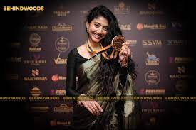
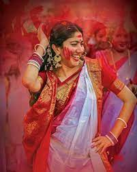
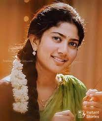

Hi Iam
Sai Pallavi
Actor, Doctor
Actor, Doctor
She is an actress and also a good doctor and now she is working on new films
Dr. Sai Pallavi is an Indian on-screen actress,
who has appeared mostly in Indian films. Best known for her debutant appearance as Malar for Premam, in the 2015
Indian films. She appeared in Kali opposite to Dulquer
Salmaan in 2016. She then decided to join the Telugu film industry with the film Fida by Shekhar kammula featuring
Varun tej and herself in the lead roles.


About Me
Sai Pallavi is an actress and dancer who has established her presence in Telugu, Tamil, and Malayalam films. Pallavi was born in Coimbatore, Tamil Nadu, India, to Senthamarai Kannan and Radha Kannan. She has a younger sister named Pooja Kannan, who is also an actor.Pallavi grew up in Coimbatore and did her schooling at Avila Convent School. She completed her medical studies at the Tbilisi State Medical University in Georgia in 2016. Later, in 2020, she sat for the Foreign Medical Graduate Examination (FMGE) in Trichy Pallavi's first brush with acting on the big screen took place in 2005 in an uncredited role in Kasthuri Maan (2005), in which she played the role of a college girl. She appeared in another uncredited blink-and-miss role in Dhaam Dhoom (2008), an action thriller starring Kangana Ranaut. Pallavi made her official acting debut as the lead in Premam (2015), a romantic comedy directed by, Alphonse Puthren, in which she essayed the role of a teacher. She was approached for the movie while she was still studying medicine, and she shot for the film during her vacation. The film was released without any teasers, trailers, or pre-release interviews. It went on to become a huge hit at the box office, garnering appreciation from critics and audiences alike, and shot her to instant fame.Pallavi bagged several awards for her performance in the film, including the Filmfare Awards South 2015 for the Best Female Debut - Malayalam, South Indian International Movie Awards (SIIMA) 2015 for the Best Female Debut - Malayalam, and the Vanitha Film Awards 2016 for the Best Newcomer - Actress. She also won the Asianet Film Honour Special Jury Award in 2015.
Awards
Gallery
 Lets Connect And Grow
Sai Pallavi
Home
About Me
Awards
Gallery
Contact